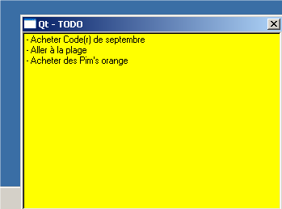

Phobos
20-Aug-2003
version 1.0
Gestionnaire de Post-it virtuels
Contact : arabine@programmationworld.com
http://www.programmationworld.com/membres/arabine
Présentation et documentation
Hop dès que Phobos est
lancé une jolie icône
apparaît dans la traybar (c'est le bouquin là).
Un clique-droit fait apparaître
un menu, sans Post-it la première fois
que Phobos est lancé. Sinon le nom des Post-it apparaît au
dessus
de "Ajouter". Cliquez sur "Quitter" pour sauvegarder les Post-it et
fermer le programme.
Cliquez sur "Ajouter" ou sur le nom d'un Post-it afin de
l'éditer
ou de visualiser son contenu. La bouton avec la croix cache
la fenêtre mais le la détruit pas. La zone
d'édition possède
tous les raccourcis habituels (copier/coller etc.).

La zone d'édition possède un menu contextuel
(clique-droit) qui
permet de réaliser moultes opérations toutes plus
intéressantes que
les autres. Le nom des options semble assez évident et
j'évite donc
d'expliquer tout ça.
L'option la plus intéressante est sans conteste "Renommer" qui
permet
de faire apparaître miraculeusement un dialogue vous invitant
à enter un
nouveau titre pour le Post-it. Validez et observez le changement
dans la barre bleue et dans le menu principal. Impressionnant hein ?
Apothéose de cette doc, la
capture suivante montre Phobos dans toute sa
splandeur. Contemplez mortels, ce rare spectacle vous êtes
offert.
Greets
- Trolltech et leur formidable bibliothèque Qt pour faire
des applis fenêtrées facilement.